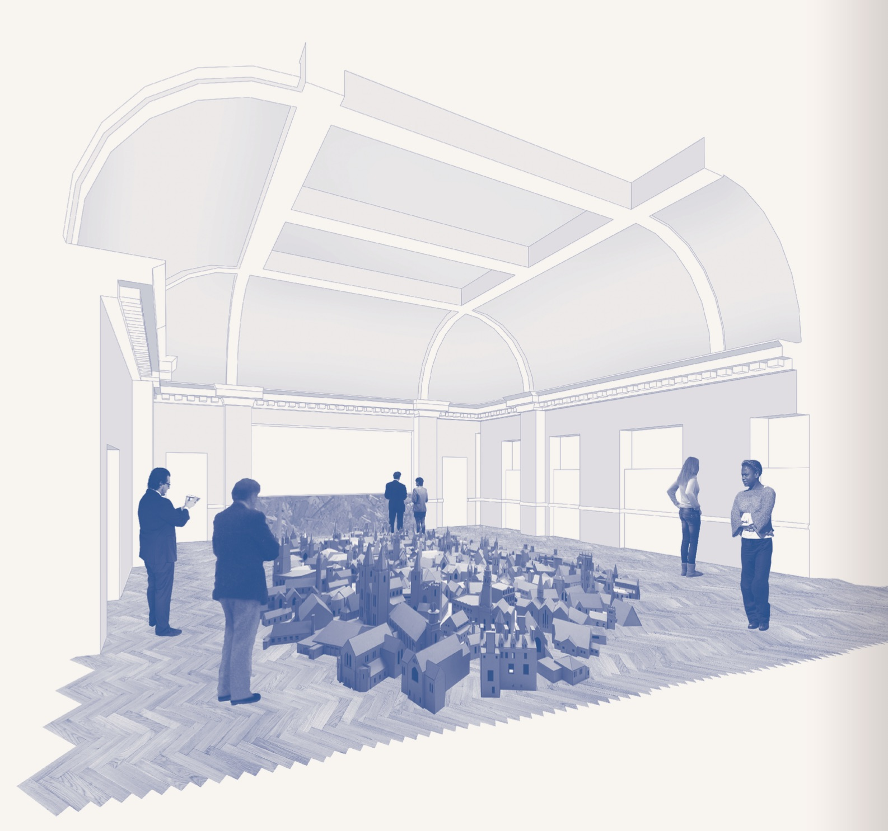

<div class="">
    <div class="">
        <div class="">
            <div class="center">
                
            </div>
            <div class="two-column blue p4">There are two communal spaces at GREEN ROOMS: the ground floor lobby,
                bar, lounge and restaurant area, and the third floor exhibition
                area and bar.
                <br>
                <br>
                <div class="card-title">GROUND FLOOR</div>
                <br>
                <br>
                <div class="p">
                    The main entrance and open plan ground floor of the hotel is a buzzy, welcoming
                    and engaging space. In the centre of the room is the reception
                    desk and bar (open daily) which will serve a selection of alcoholic
                    drinks, as well as teas and coffees and light bites. To the
                    left of the reception desk and bar is a lounge and exhibition
                    space. Measuring 8 x 9m, it can easily accommodate 120 people
                    for a standing event. Set behind it is a contained outside
                    garden space with wooden decking, benches and tables – a perfect
                    spot to enjoy a drink and meet other hotel guests when the
                    sun is shining. To the right of the reception desk and bar
                    is the restaurant space. The restaurant will be an incubator
                    project running rent-free rotational residencies for emerging
                    restaurateurs, and a supportive training ground where they
                    will be able to develop their brands over six to 12 month periods.
                    Running between 50 and 75 covers, it will be open daily for
                    lunch and dinner services. Restaurateurs interested in taking
                    up a residency should contact the GREEN ROOMS management team
                    at <a href="info@greenrooms.london">info@greenrooms.london</a>
                </div>
                <br>
                <br>
                <div class="card-title">THIRD FLOOR</div>
                <br>
                <br>
                <div class="p">
                    A stunning multi-use gallery and workspace by day and a bustling bar by night.
                    The roomy third floor has high ceilings, polished wood flooring,
                    a beautiful original central skylight and can accommodate up
                    to 200 people for a standing event. Measuring 12 x 9m, it can
                    be hired for rehearsals, exhibitions, screenings and other
                    private events. There are three rooms adjoining the main space
                    which are also available for hire.</div><br>
                <div>For more info or to book an event please email <a href="mailto:emailsales@greenrooms.london">sales@greenrooms.london</a>
                    or give us a call on <a href="tel:0208 888 5317">0208 888 5317</a>
                </div>

            </div>
        </div>
    </div>
</div>
